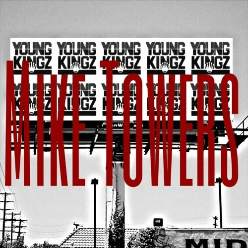
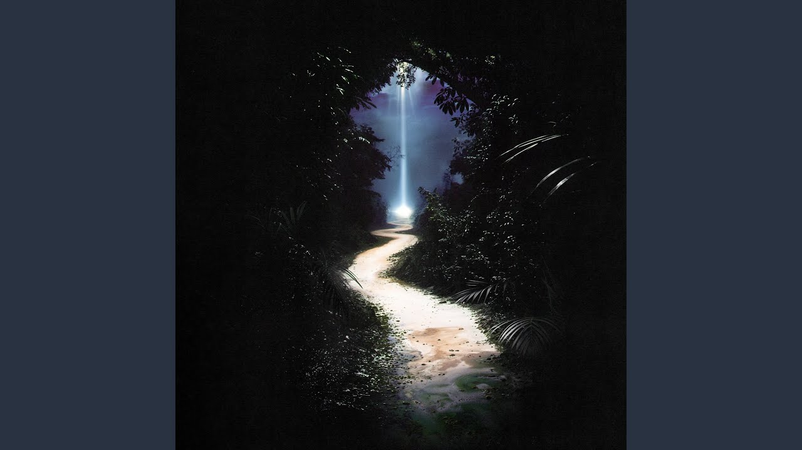
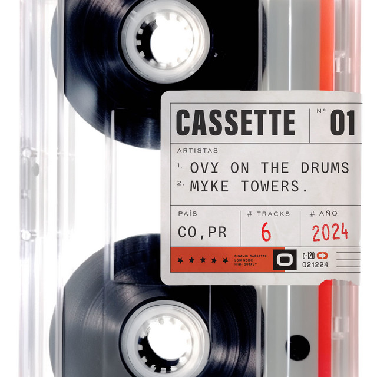

Myke Towers

Año de inicio/finalización:
Inicio en 2013 de la mano de Young Kingz Entertainment, junto a esta publicó las canciones “Comencé y Termine Abajo”.
Canción Más Popular:
Si Se Da Remix es la cancion mas popular que tiene y la tiene junto a Farruko, Arcangel, Sech & Zion
10 canciones más escuchadas:
Álbum más escuchado/Vendido:
El álbum más escuchado y vendido de Myke Towers es "Easy Money Baby", su álbum de estudio debut. Fue lanzado el 24 de enero de 2020 a través de White World Music, incluyendo éxitos como «Si se da», «Diosa» y «La playa», este último con una remezcla junto a Maluma y Farruko.

Primer Concierto:
Su primer concierto conocido fue parte de una gira mundial en 2018, marcando el inicio de su carrera como artista internacional.
Último concierto:
Su último concierto registrado fue en 2023, formando parte del tour llamado "La Vida Es Una" en Estados Unidos, donde Myke Towers continuó cautivando a su audiencia con su música y energía en el escenario.
Primera Canción:
"Comencé y Terminé Abajo" fue su primera canción, inicialmente compartida en SoundCloud como un freestyle, marcando sus primeros pasos en la escena musical.
Última canción:
"ADIVINO" fue su última canción oficialmente lanzada junto a Bad Bunny, destacándose por su colaboración con otro icono del género urbano.
Primer álbum:
El álbum debut de Myke Towers, "Easy Money Baby", no solo marcó su entrada en la industria musical con fuerza, sino que también incluyó colaboraciones y éxitos que resonaron en la escena urbana latina.
Último álbum:
"CASSETTE 01" es su último proyecto musical, una colaboración con Ovy On The Drums donde Myke Towers y Ovy rinden homenaje al reguetón clásico y a lo vintage en la música urbana.
Biografía:
Michael Anthony Torres Monge, conocido artísticamente como Myke Towers, es un cantante y compositor puertorriqueño nacido el 15 de enero de 1994 en Río Piedras, San Juan, Puerto Rico. Desde temprana edad mostró un gran interés por la música y ha logrado destacarse como uno de los artistas más influyentes en el género urbano latino.